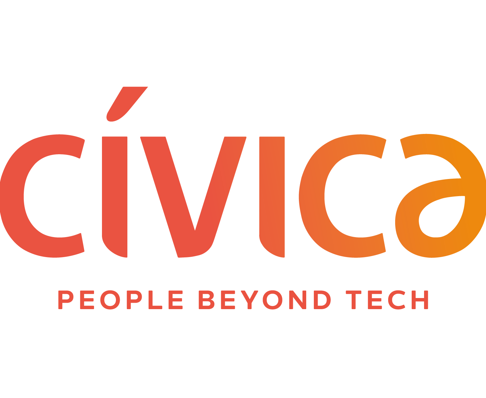

Bio
¡Hola! Soy David, graduado por la Universidad de Granada en Ingeniería Informática y Administración y Dirección de Empresas, y actualmente estudiante del Máster en Inteligencia Artificial, Reconocimiento de Formas e Imagen Digital en la Universitat Politècnica de València. Me estoy especializando en Data Science y Computer Vision. Tengo experiencia práctica en el ciclo de vida del dato gracias a mis prácticas como Junior Data Engineer en Cívica Software. Me interesa la IA confiable (Trustworthy AI), en concreto la cuantificación de la incertidumbre y la interpretabilidad, campos en los que sigo profundizando para garantizar que los sistemas inteligentes sean transparentes, robustos y éticos.
¡Actualmente buscando prácticas de empresa con las que hacer mi proyecto de Fin de Máster! 😉
Durante mi carrera universitaria descubrí mi pasión por la IA, concretamente por el Machine Learning, que permitía obtener algoritmos que iban mucho más allá del código y extraer patrones complejos a partir de datos en bruto para transformarlos en conocimiento profundo. Esta pasión me llevó de forma natural hacia la Ciencia de Datos. Disfruto profundizando en conjuntos de datos para descubrir patrones ocultos y creando visualizaciones que ayuden a comprender la realidad que subyace a ellos.
Mi base técnica en el ciclo de vida del dato se consolidó durante mis prácticas extracurriculares en Cívica Software, donde trabajé 3 meses como Junior Data Engineer en un proyecto para una entidad financiera. Allí adquirí una experiencia fundamental en el ecosistema de bases de datos, lo que me permitió comprender el ciclo de vida del dato y los procesos ETL.
Más tarde, gracias a una de las asignaturas más exigentes pero agradecidas de la carrera, desarrollé un fuerte interés por la Visión por Computador. Este campo me permitió explorar la representación y el filtrado clásicos de imágenes, la extracción de características artesanales y, en última instancia, sumergirme en el fascinante mundo del Deep Learning, explorando el potencial de las CNNs y los Transformers en tareas complejas como la detección de objetos y la segmentación.

Sin embargo, también comprobé que la IA no es infalible: no solo comete errores objetivos, sino que reproduce imprecisiones y sesgos sistémicos derivados de los conjuntos de datos recopilados por humanos. Por eso me he acercado cada vez más al campo de la IA Confiable (Trustworthy AI). Creo que, para que la inteligencia artificial sea realmente útil en el mundo real, debe ser transparente y robusta.
Mi enfoque más reciente en este sentido es la Cuantificación de la Incertidumbre, el núcleo de mi Trabajo de Fin de Grado: Cuantificación de la incertidumbre en las predicciones de modelos de machine learning para problemas de estimación del perfil biológico (más detalles abajo, en Proyectos). Este trabajo integra Conformal Prediction en tareas de estimación biológica, como la estimación de la edad y el sexo a partir de radiografías maxilofaciales, proporcionando intervalos de predicción (en regresión) y conjuntos de etiquetas (en clasificación) con garantías estadísticas, capturando así la incertidumbre en cada caso.

Actualmente estoy leyendo Interpretable Machine Learning, de Christoph Molnar, para tener una visión más completa de cómo abrir la «caja negra» de los algoritmos.
Más allá de lo académico, siempre he creído en la importancia de participar activamente en la comunidad universitaria. Durante el grado tuve el honor de ser durante 1 año vicesecretario y durante 2 años secretario de la Delegación de Estudiantes de Ingenierías Informática y de Telecomunicaciones (DEIIT). En esta etapa me encargué de convocar las sesiones plenarias, redactar y publicar las actas y gestionar el censo de miembros, además de ayudar a organizar eventos en la escuela (mercadillos de BBAA, Día de la Escuela y Hackathon de desarrollo de videojuegos) o colaborar en otros (Granabot).
Formación académica
Nota media de 8.01 en Ingeniería Informática y 8. 36 en Administración y Dirección de Empresas.
Proyectos
En colaboración con Panacea Cooperative Research, dirigido por Pablo Mesejo Santiago y mentorizado por Javier Venema Rodríguez.
- Acceso y gestión de información académica (más de 100 referencias, entre libros, artículos y sitios web).
- Análisis, síntesis y aplicación de métodos del estado del arte para problemas de estimación biológica.
- Ecosistemas colaborativos: Overleaf, Google Workspace y Microsoft 365.
Experiencia laboral

Prácticas extracurriculares: Junior Data Engineer Cívica Software · Julio a octubre de 2024 (3 meses)- Mantenimiento de bases de datos en Teradata y Snowflake.
- Supervisión de flujos de datos mediante procesos ETL con Informatica PowerCenter.
- Redacción y mantenimiento de la documentación técnica de los proyectos, garantizando la claridad y la trazabilidad de los procesos con Microsoft Word.
- Elaboración de informes estadísticos para el seguimiento de los KPI con Power BI.
Habilidades IT
- Uso avanzado de Pandas y Polars para la manipulación y limpieza de datos de alto rendimiento.
- Matplotlib, Seaborn y Plotly para comunicar conocimientos complejos mediante gráficos interactivos y con calidad de publicación.
- Uso experto de Scikit-Learn para el aprendizaje automático clásico, y de PyTorch y TensorFlow/Keras para el aprendizaje profundo.
- Especializado en la cuantificación de la incertidumbre con Crepes, MAPIE y TorchCP.
Experiencia en proyectos académicos avanzados con herramientas como:
- OpenCV para la manipulación avanzada de imágenes, el filtrado digital y la visión clásica.
- Pillow para la gestión eficiente de formatos de imagen y el preprocesamiento de datos.
- Uso avanzado de PyTorch y TensorFlow/Keras para la implementación de redes profundas.
- Familiaridad con ONNX para la interoperabilidad de modelos.
Nivel intermedio en SQL (CTEs, funciones de ventana, procedimientos…). Experiencia práctica en entornos empresariales centrada en la supervisión y el mantenimiento de estructuras de datos existentes:
- Data Warehousing: experiencia intermedia con Snowflake y Teradata, supervisando conjuntos de datos analíticos y realizando modificaciones menores en los esquemas.
- ETL e integración: experiencia básica con Informatica PowerCenter.
- Conocimientos intermedios de Power BI para la visualización de datos.
La claridad, el orden y la reproducibilidad de los documentos son pilares fundamentales de la comunicación.
- Uso avanzado de LaTeX y Typst para la composición de documentos e informes científicos de alta calidad.
- Creación de sitios web con Quarto (como esta página web 😄).
- Ecosistemas colaborativos: Overleaf, Google Workspace y Microsoft 365.
- Control de versiones: uso frecuente de Git y GitHub para el desarrollo colaborativo y el control de versiones del código.
- Contenedores: experiencia básica con Docker para aislar entornos de uso personal.
- Python: dominio avanzado en el desarrollo de aplicaciones de análisis de datos, visualización y despliegue de modelos de Machine Learning. Experiencia sólida en el ecosistema científico (Pandas, NumPy, Matplotlib/Seaborn) y en el desarrollo de flujos de trabajo eficientes para el procesamiento de información.
- C++ y Java: nivel intermedio, usados durante la carrera en proyectos pequeños y medianos (programación orientada a objetos).
- Verilog (Intel Altera): nivel básico.
- R: nivel básico para generar visualizaciones de datos. ¡Aprendiendo ahora mismo!
Idiomas
Certificación FCE de Cambridge. Número de verificación: D5753484.
Recomendaciones
Pablo Mesejo Santiago es profesor asociado del Departamento de Informática e Inteligencia Artificial de la Universidad de Granada, y socio cofundador y director de Inteligencia Artificial de Panacea Cooperative Research.